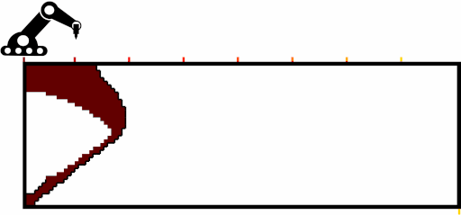

Space-Time Topology Optimization for Additive Manufacturing: Concurrent Optimization of Structural Layout and Fabrication Sequence
Structural and Multidisciplinary Optimization (SMO), 2020
ISSMO/Springer prize
| Weiming Wang | Dirk Munro | Charlie C.L. Wang | Fred van Keulen | Jun Wu |
| TU Delft | TU Delft | TU Delft | TU Delft | TU Delft |

Animation illustrating an optimized structural layout and optimized fabriaction sequence.
Abstract
The design of optimal structures and the planning of (additive manufacturing) fabrication sequences have been considered typically as two separate tasks that are performed consecutively. In the light of recent advances in robot-assisted (wire-arc) additive manufacturing which enable addition of material along curved surfaces, we present a novel topology optimization formulation which concurrently optimizes the structure and the fabrication sequence. For this, two sets of design variables, i.e. a density field for defining the structural layout, and a time field which determines the fabrication process order, are simultaneously optimized. These two fields allow to generate a sequence of intermediate structures, upon which manufacturing constraints (e.g. fabrication continuity and speed) are imposed. The proposed space-time formulation is general, and is demonstrated on three fabrication settings, considering self-weight of the intermediate structures, process-dependent critical loads, and time-dependent material properties.Related Projects
Compatibility in Microstructural Optimization for Additive Manufacturing
Continuous Optimization of Adaptive Quadtree Structures
Minimum Compliance Topology Optimization of Shell-Infill Composites for Additive Manufacturing
Infill Optimization for Additive Manufacturing -- Approaching Bone-like Porous Structures
Self-Supporting Rhombic Infill Structures for Additive Manufacturing
A System for High-Resolution Topology Optimization
Acknowledgements
The authors gratefully acknowledge the support from the LEaDing Fellows Programme at the Delft University of Technology, which has received funding from the European Union's Horizon 2020 research and innovation programme under the Marie Skłodowska-Curie grant agreement No 707404. Weiming Wang wishes to thank the Natural Science Foundation of China (61702079, 61562062, U1811463), and the Innovation Foundation of Science and Technology of Dalian (2018J11CY010).
Download
 |
Paper 11.9 MB |
Bibtex
@article{Wang2020SMO,
title = "Space-Time Topology Optimization for Additive Manufacturing: Concurrent Optimization of Structural Layout and Fabrication Sequence",
journal = "Structural and Multidisciplinary Optimization",
year = "2020",
doi = "https://doi.org/10.1007/s00158-019-02420-6",
volume = "61",
number = "1",
pages = "1-18",
issn = "1615-1488",
author = "Weiming Wang and Dirk Munro and Charlie C.L. Wang and Fred van Keulen and Jun Wu"
}